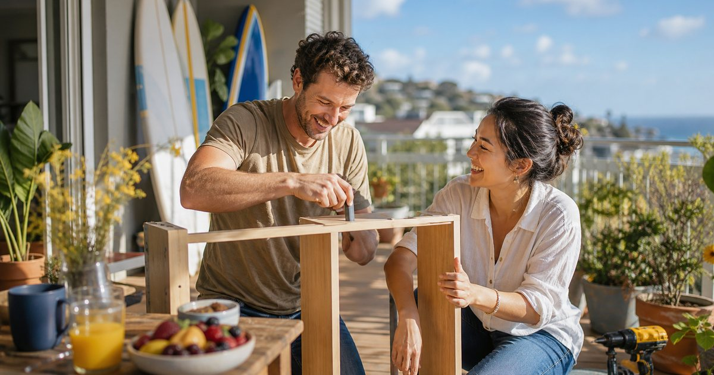

懷孕媽媽可以做什麼運動？從散步、游泳到孕期瑜伽的安全推薦
孕期運動不是追求強度，而是用散步、水中活動、溫和肌力與骨盆底訓練，幫身體更穩地陪妳走過懷孕日常。

先抓住原則：能說話、不硬撐、先聽醫療團隊
CDC 與 WHO 的建議都把孕期活動放在「一般健康、沒有禁忌症」的前提下。也就是說，妳不需要把懷孕視為只能躺著休息的狀態，但也不應把網路上的訓練菜單直接套用到自己身上。每一次產檢都是重新確認活動範圍的機會。
最實用的強度判斷，是 NHS 提到的「可以一邊運動一邊說話」。如果妳已經喘到無法完整說句子，通常代表強度太高，應該放慢、休息或停止。孕期運動的目標是穩定，而不是挑戰極限。
若妳原本就有規律運動，通常可以在醫療團隊同意下調整後延續；若懷孕前很少運動，請從更短、更輕的活動開始，例如每天 10 到 15 分鐘散步，再慢慢增加。
- 先確認產檢醫師或助產團隊沒有要求妳限制活動。
- 用「可以說話」作為中等強度的簡單判斷。
- 不要突然開始高強度或不熟悉的訓練。
- 任何疼痛、頭暈、胸悶、出血、規律宮縮或明顯不適，都應停止並聯絡醫療團隊。
一、散步：最容易開始，也最容易持續
散步是多數準媽媽最容易維持的運動。它不需要器材，也不要求特別技巧，適合安排在飯後、通勤前後或傍晚比較涼爽的時間。對懷孕後容易疲憊的人來說，散步的好處是可調整性高：今天狀態好就走久一點，身體沉重就分成兩段。
如果妳想接近每週 150 分鐘中等強度活動的公衛建議，可以把它拆成每週 5 天、每天約 30 分鐘。這不是考試；若某天只能走 10 分鐘，也仍然比完全不動更好。
- 選平坦、有照明、可隨時休息的路線。
- 穿支撐性好的鞋，避免濕滑地面。
- 天氣悶熱時改成室內步行、商場散步或縮短時間。
- 後期肚子變大時，把長時間步行拆成多段更舒服。
二、游泳與水中有氧：把重量交給水，身體會比較輕
水中活動很適合覺得腰背沉重、下肢容易腫脹，或不喜歡陸上衝擊感的媽媽。水的浮力能讓身體暫時從重量感中鬆開，活動時也比較不容易有跳躍或落地衝擊。
可以選擇自由式慢游、水中走路或孕婦水中有氧課。若要上課，請確認教練知道妳懷孕幾週，並具備帶孕婦課程的經驗。不要為了跟上團課節奏而憋氣、衝刺或做讓肚子不舒服的動作。
- 避開過熱的水療池或讓妳覺得暈的環境。
- 上下泳池階梯時扶好欄杆，避免滑倒。
- 以舒服、能穩定呼吸的節奏為主。
- 若有破水疑慮、出血或醫師要求避免泡水，請不要自行下水。
三、孕期瑜伽與伸展：練呼吸，也練日常姿勢
孕期瑜伽的價值不在於把動作做得漂亮，而是透過呼吸、溫和伸展與身體覺察，讓準媽媽更清楚哪些姿勢讓自己舒服，哪些需要調整。它也很適合拿來練習放慢節奏，對睡前放鬆、肩頸緊繃與背部壓力都有幫助。
請選擇明確標示為孕婦適用的課程，並在課前告知孕週與身體狀況。懷孕中後期通常要避開長時間平躺、強烈扭轉、壓迫腹部、憋氣，以及任何讓妳覺得腹部拉扯或頭暈的姿勢。
- 優先選孕婦瑜伽，而不是一般高強度瑜伽課。
- 使用瑜伽磚、抱枕或椅子輔助，不必勉強進入深度伸展。
- 第一孕期後避免長時間仰躺。
- 任何姿勢只要引發不適，就立刻退回或停止。
四、溫和肌力訓練：為抱寶寶與日常生活保留力量
孕期肌力不是要追重量，而是維持臀腿、背部與上肢的基本支撐。簡單的椅子深蹲、靠牆伏地挺身、彈力帶划船、側躺抬腿，都可以在專業指導下變成低衝擊的日常訓練。
重點是動作穩、呼吸順、不要憋氣。若妳原本沒有重訓習慣，不建議懷孕後突然開始追求大重量。若原本就有訓練，也應降低追求個人紀錄的心態，改成維持動作品質與安全範圍。
- 每個動作留有餘裕，不做到力竭。
- 避免憋氣用力，出力時保持呼吸。
- 使用穩固椅子或牆面增加安全感。
- 骨盆疼痛、腰痛或腹部不適時，先暫停並諮詢專業人員。
五、骨盆底訓練：小動作，對產前產後都重要
NHS 特別提醒，骨盆底肌在懷孕與生產中承受很大壓力。骨盆底訓練看起來不像運動，卻能幫助支撐膀胱、子宮與腸道，也常被用來降低孕期與產後漏尿困擾。
做法不是用力夾到全身緊繃，而是像輕輕忍住尿意與排氣，再慢慢放鬆。妳可以把它放在刷牙後、吃飯前或睡前，每天分幾次做。若不確定自己是否做對，找骨盆底物理治療師或產後物理治療師評估，會比自己猜更安心。
- 收縮時不要憋氣，也不要把肩膀、臀部一起夾緊。
- 練習收縮，也要練習完整放鬆。
- 若做完反而疼痛或骨盆壓力增加，請停止並尋求評估。
- 產後恢復也應循序漸進，剖腹產或有併發症者更要先問醫療團隊。
哪些運動先避開？高跌倒、高撞擊、高溫與長時間仰躺
孕期要避開的不是所有運動，而是風險不值得的情境。NHS 與 WHO 都提醒，應避免接觸性運動、容易跌倒的活動、過熱環境，以及第一孕期後長時間仰躺。這些不是為了限制妳，而是讓妳把體力留給更穩定、更可持續的活動。
像拳擊、柔道、滑雪、騎馬、潛水、高海拔不適應活動，或任何可能撞到腹部、摔倒、過度缺氧的活動，都不適合作為一般孕期推薦。若妳是運動員或原本有高強度訓練背景，請和熟悉孕期運動的醫師、物理治療師或教練一起調整。
- 避免接觸性運動與腹部可能被撞擊的活動。
- 避免容易跌倒的活動，例如滑雪、騎馬、體操等。
- 避免悶熱高濕環境，並隨時補水。
- 第一孕期後不要長時間平躺做訓練。
一週安排範例：把 150 分鐘拆成可生活化的小段
如果醫療團隊同意妳維持活動，可以把一週安排得像日常，而不是像訓練營。例：週一、三、五各散步 30 分鐘；週二做 20 分鐘孕期瑜伽與骨盆底訓練；週六游泳或水中走路 30 分鐘；週日休息或只做輕鬆伸展。
這樣加起來大約接近每週 140 到 160 分鐘，符合公衛建議的精神，也保留了休息彈性。真正重要的是，妳每次做完都覺得身體比較清醒、呼吸比較順，而不是更疲憊、更緊張。
- 狀態好時增加 5 到 10 分鐘，不舒服時立刻縮短。
- 把補水、散熱與休息寫進計畫，而不是只寫運動項目。
- 用週總量觀察，不需要每天都完美。
- 產檢結果或身體狀態改變時，運動安排也要跟著調整。
FAQ
懷孕前沒有運動習慣，現在可以開始嗎？
若妳是健康且懷孕狀況穩定的準媽媽，可以先詢問產檢醫師或助產團隊，再從短時間、低強度活動開始，例如每天 10 到 15 分鐘散步。不要突然開始高強度課程或不熟悉的訓練。
孕期運動一定要做到每週 150 分鐘嗎？
150 分鐘是 CDC 與 WHO 對一般健康孕婦的公衛建議方向，不是用來造成壓力的考核。若妳目前做不到，先從能安全完成的量開始；任何活動都比完全不動更有幫助。
孕婦可以做瑜伽或重訓嗎？
可以考慮孕婦瑜伽與溫和肌力訓練，但要避開憋氣、壓迫腹部、長時間仰躺、強烈扭轉或讓妳不舒服的動作。若有疼痛、出血、頭暈、胸悶、規律宮縮或醫師要求限制活動，請停止並聯絡醫療團隊。
下一步建議
孕期運動最好的起點，是把安全、舒服與可持續放在前面。若妳想延伸閱讀更多身體節奏、瑜伽與恢復主題，可以從健康恢復分類繼續探索。
重要警語
本文為一般健康資訊與生活建議，不能取代產檢醫師、助產師、物理治療師或其他合格醫療專業人員的個別評估。若妳有高風險妊娠、出血、胎盤問題、早產風險、嚴重貧血、心肺疾病、血壓問題、疼痛或任何醫療團隊提醒的限制，請先取得專業建議再開始或調整運動。